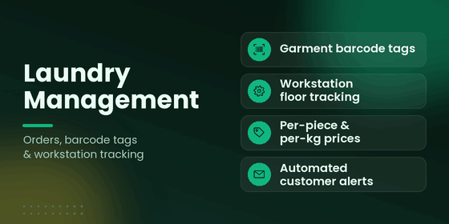
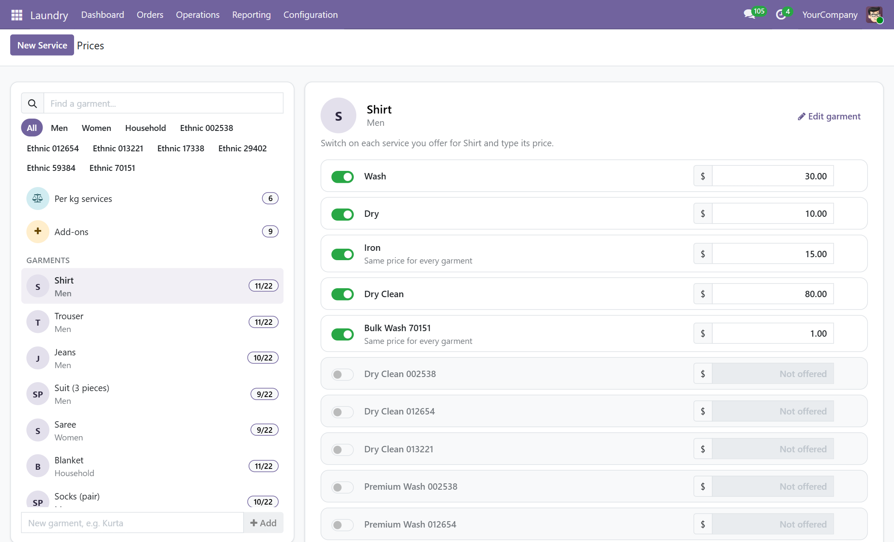
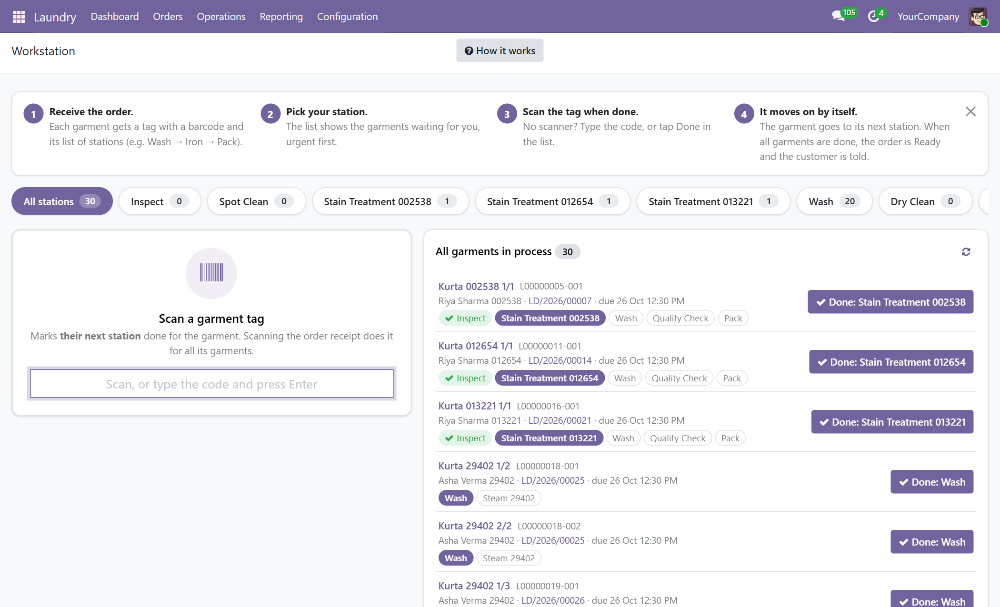
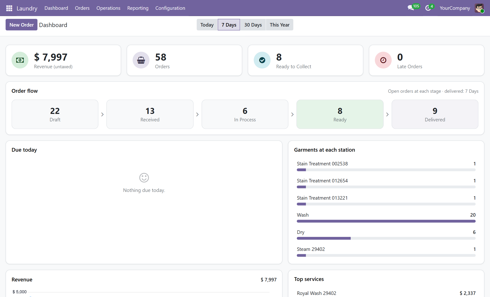
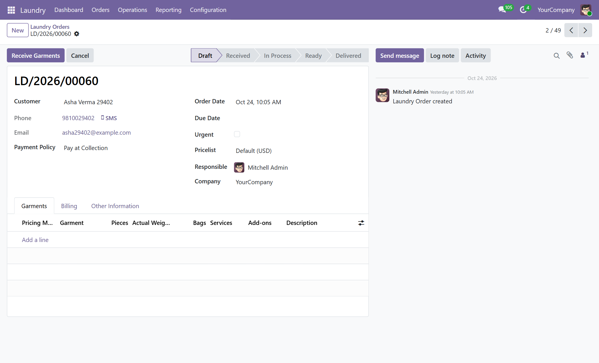
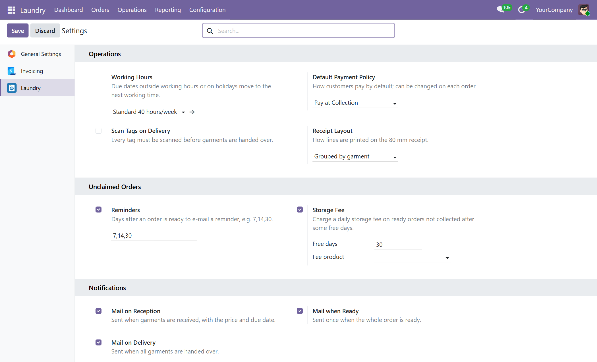
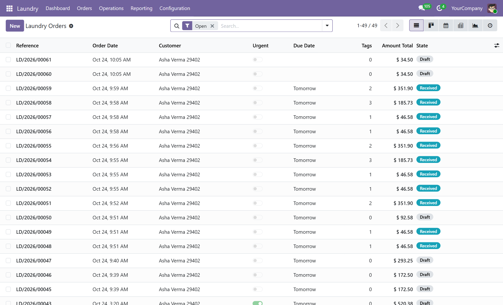
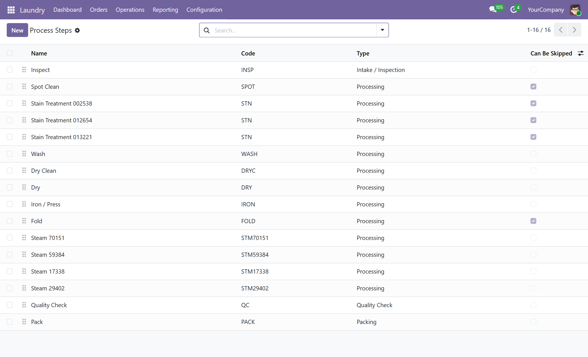

Complete laundry management from intake counter to floor workstations: garment barcode tags, visual price grids, station progress tracking, weighing wizards, and automated customer notifications.

Receive garments, pick services on the spot, and print 80 mm receipts with garment tags.
Operators scan tags at Wash, Dry, Iron, and Pack stations to track progress in real time.
Customers receive automated collection emails; staff hand over items and issue invoices.
Paper tickets, misplaced customer clothes, disputed prices, and lost items cause friction every day. Replace manual chaos with barcode-driven traceability directly inside Odoo.
Select garments and services on the intake line, weigh bulk loads, and print thermal receipt and barcode tags.
Floor workers scan tags at Wash, Dry, Iron, and Pack stations. Every step transition is logged with operator and timestamp.
When the last garment passes its final station, Odoo marks the order Ready and automatically emails the customer.
Deliver garments with tag validation or one-click complete handover, then generate invoices or reconcile advance deposits.
price_date) guarantees that offers valid when dropped off remain locked even after subsequent weighing.



One physical barcode tag per garment navigates multiple stations without retagging.
Mix per-piece garments and bulk weighed loads with minimum weight thresholds in one order.
Full audit log with timestamps, operator IDs, and rework wizards for items requiring re-washing.
Ready-to-print 80 mm POS customer receipts and dedicated thermal garment barcode tags.
Trigger email notifications on order intake, completion, handover, and uncollected reminders.
Designed with clean selection hooks and methods ready for POS and Website laundry extensions.
Manage drop-offs, price per garment or per kg, and track garments across stations.
Process guest laundry and staff uniforms with strict turnaround scheduling and logging.
Handle large bulk weighed loads with minimum billing charges and advance deposit tracking.
Fast counter intake, express surcharges, and rapid barcode workstation processing.

Clear technical expectations for a smooth rollout in your production environment.
Runs on Odoo Community, Enterprise, and Odoo.sh. Odoo Online (SaaS) does not allow custom modules.
Receipts and garment tags print to standard 80 mm thermal printers or via standard browser PDF printing.
Automated status and reminder emails require an active outgoing email server configured in Odoo Settings.
Acts as the standalone backend core or pairs with forthcoming POS and online customer booking extensions.
Explore every workstation and management screen in action.


Tap a question to see the answer. Missing yours? Write to support@kalvyai.com.
Odoo Community, Enterprise, and Odoo.sh are fully supported. Custom modules cannot be installed on Odoo Online (SaaS multi-tenant).
The module depends only on standard Odoo core apps: mail, product, account, barcodes, and resource. No external Python packages are required.
Yes. Multi-company record rules ensure orders, intakes, items, workstation routes, and offers remain isolated per company.
When garments are received, Odoo creates individual item records with unique barcodes. Workers scan the garment tag or the order receipt at workstations to record progress.
Yes. Each service defines whether it is priced per piece, per set, or per kg. Weighed loads support minimum billable quantities and quick weighing wizards.
Managers can trigger the rework wizard from the item screen to route the garment back to a previous process step and log the reason.
Depending on your company setting, you can require prepayment at intake, allow postpaid invoicing at delivery, or take partial advances with double-invoicing protection.
An automated daily cron checks for ready orders past customer pickup dates, sends email reminders, and calculates daily storage fees after the configured grace period.
Deploy Laundry Management on your Odoo instance or get in touch for questions, live demonstrations, and deployment advice.
Send us your questions or environment details and our team will get back to you promptly.
Contact Kalvyai Teamor write to support@kalvyai.com
From the day of purchase, Kalvyai provides support to help you get running smoothly and answer your operational questions.
Not covered: data migration from legacy non-Odoo systems, hardware driver repairs, and custom third-party module conflicts.